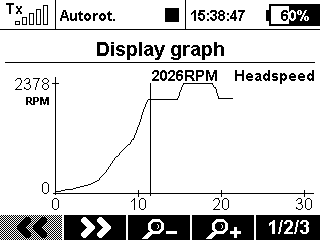

Some ESC's don't output head speed and only output motor RPM. This app lets you enter the motor pole pairs (pole pairs. ie a 10 pole motor has 5 pole pairs) and gear ratio. The main gear has a decimal input to allow calculation for two-stage drive like the Gaui R5. The application will also optionally speak out the head speed continually when a user- defined switch is active. The app logs the Headspeed in the jeti logs using the latest tx firmware. This enables review of the head speed in the Data Analyser application.
Version: 1.4
Compatibility: DC/DS-14/16/24, DS-12
RPMHead is part of tools available from:AlCormack